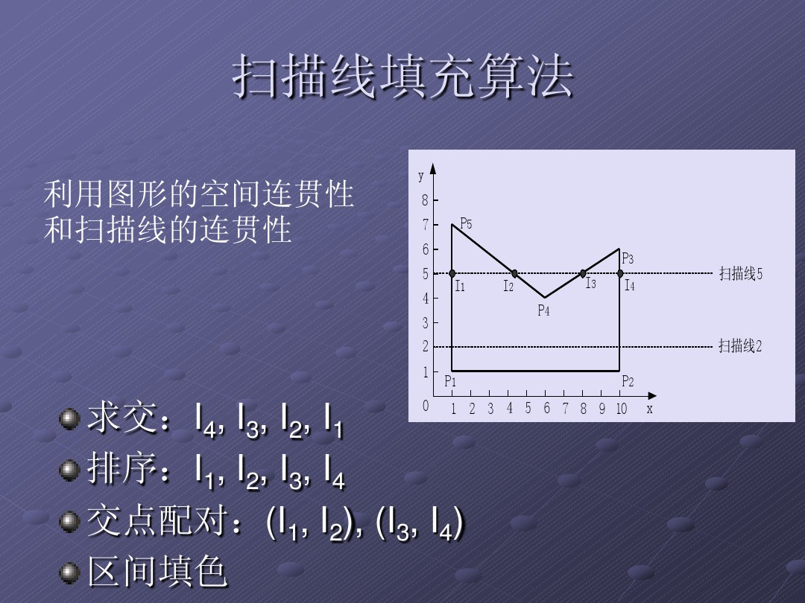

区域填充
最近在做一个图形学的实验，关于区域填充（逐点法填充、有序边表填充、图案填充以及种子填充），还有补充的多边形三角剖分。在做这几个实验的时候，学习到了很多知识，也掉了很多头发，在这里集中整理一下，也方便以后回顾学习。
橡皮筋效果
本次实验的环境是使用vs提供的MFC框架，在鼠标交互输入中使用橡皮筋算法来实现多边形的输入。首先定义相应变量来保存输入的数据。
1 | int m_pNumbers; //输入点的个数 |
- 每次进行鼠标点击的时候，便调用OnLButtonDown(UINT nFlags, CPoint point)函数，若输入的顶点个数不超过规定最大值，便保存当前输入点的信息。
- 在输入第一个点之后，移动鼠标，便会有一条线从上一个输入点A连接到鼠标当前位置，由OnMouseMove(UINT nFlags, CPoint point)函数实现该功能。每次鼠标移动时t1时刻，再一次绘制上一个点A到t1时刻鼠标位置的线段，将该直线隐藏。然后更新m_mousePoint的值，然后绘制当前t2时刻，上一个输入点A到当前t2时刻鼠标位置的线段。
- 在用户输入完成之后，双击完成输入。**在这次也是发现了MFC的 一个隐藏的知识点，就是在用户双击的时候，MFC会先触发单击事件函数，然后调用双击事件函数，**所以这样我们就不用在双击时间函数中去保存双击的输入点信息，只需要将最后的输入点和起点相连即可。
- 以上操作便完成了橡皮筋效果。在完成多边形的绘制之后，便根据用户的选择来进行相应操作。
代码实现如下~
1 | void CcgPDHFillPolyView::OnMouseMove(UINT nFlags, CPoint point) |
有序边表法填充
首先给出有序边表法中定义使用的变量。
1 | int m_Begin, m_End, m_edgeNumbers, m_Scan; //求交边集指针，有效边数，当前扫描位置 |
基本思想：用水平扫描线从上到下（或从下到上）扫描由多条首尾相连的线段构成的多边形，每根扫描线与多边形的某些边产生一系列交点。将这些交点按照x坐标排序，将排序后的点两两成对，作为线段的两个端点，以所填的颜色画水平直线。

- 在实现中首先需要对多边形的每一条边进行处理操作，因为是采用水平线扫描填充，所以对于水平线不做处理。对其余边根据端点的y值大小进行排序，保存yMax，yMin，Xa(相对应的x坐标)以及Dx(斜率的倒数)。
- 在进行扫描的过程中，很重要的一部分操作便是求交边集指针的移动。初始状态位0，在扫描线开始向下移动后，调用Include()函数，检查是否有边进入扫描线交集(即判断所有y最大值大于扫描线当前y值的边线)，此时将m_End++，即尾指针向后移动。在Include()函数中，也会调整起始点位置，将Dx调整为位移量。
- 之后调用UpdateXvalue()函数，判断是否有边退出求交边集。
- 如果没有边退出，则移动x，并根据x值大小进行排序。
- 有边退出，更新数组，删除该边，m_Begin++，即头指针向后移动。
- 调用pFillScan(pDC)函数，进行填充。
- m_Scan–，回到第二步进行循环，直到m_Begin==m_End。
实现代码如下~
1 | void CcgPDHFillPolyView::Fillpolygon(int pNumbers, CPoint *points, CDC *pDC) |
不过这样的填充效果一般，不过写代码的时候，从中学到很多知识以及代码技巧。对这个算法也是深入了解T_T

图案填充
图案填充的准备内容和上面的一样，代码也在上面给出，我们只需要给出填充的图案，然后存放在二维数组m_patternData中即可，在本次实验中，我给了一个“A”的图案。我也是对模运算越来越觉得神奇，当初学的时候还没啥感觉~
1 | int m_patternData[12][12] = { |

逐点法
在逐点法实现中，用到了两个老师给好的函数。
1 | struct BoxRect_t { |
其中的实现原理十分简单，不过PointInPolygon(int pointNumOfPolygon, CPoint tarPolygon[], CPoint testPoint)函数的实现比较复杂，不过这个函数也十分实用，在后面的三角剖分中我也有使用。

种子填充
点填充有好几种方法，其中比较简单实现的是四连通泛填充算法。基本思路就是给定种子，然后去填充种子上下左右四个方向的像素点，如果为空，则进行填充。
实现代码如下~
1 | void FloodFill4(int x, int y, int fillColor, int oldColor) |
不过如果运行这一段代码很容易就会导致栈溢出，，，虽然代码简单，但是没法用。
所以更多的是使用扫描线种子填充算法。
- 种子像素入栈。
- 当栈非空时，重复执行一下操作。
- 栈顶像素出栈。
- 沿扫描线对出栈像素的左右像素进行填充，直到遇到边界像素为止。
- 将上述区间内的最左、最右像素记为和
- 在区间[ , ]内检查与当前扫描线相邻的上下两条扫描线是否全为边界像素或已填充的像素，若为非边界和未填充，则把每一区间的最右像素作为种子像素压入堆栈，重复执行上述操作。


实现代码如下~
1 | //扫描线种子填充 |
扫描线种子填充算法的填充效果很好，不过填充速度会慢很多，，能够在屏幕上看到一个个像素点在填充。

多边形三角剖分
关于这个拓展功能的实现，当时在网上看了不少资料，，然后大部分都没有看懂。不过上课的时候老师给了一种使用递归实现的方法，后来发现和网上的耳切法比较相似。老师给出的实现思路如下~
- 选择多边形的最左顶点L+前后顶点，构成一个三角形。
- 检查该三角形内是否有其他顶点。
- 不包含其他顶点。则分割该三角形，递归调用第一步。
- 若包含其他顶点。则连接L与进入的顶点中最左侧的点，这样便会分割该多边形，然后对两个多边形再递归调用第一步。
实现代码如下~
1 | void CcgPDHFillPolyView::Triangulation(CPoint* points, int pNumbers, int number) |
这一部分代码在编写的时候，还是比较掉头发的，当时在处理多边形分割的时候遇到了很多问题，后来也是通过单步调试解决的。最后成功之后，还是蛮有成就感的！